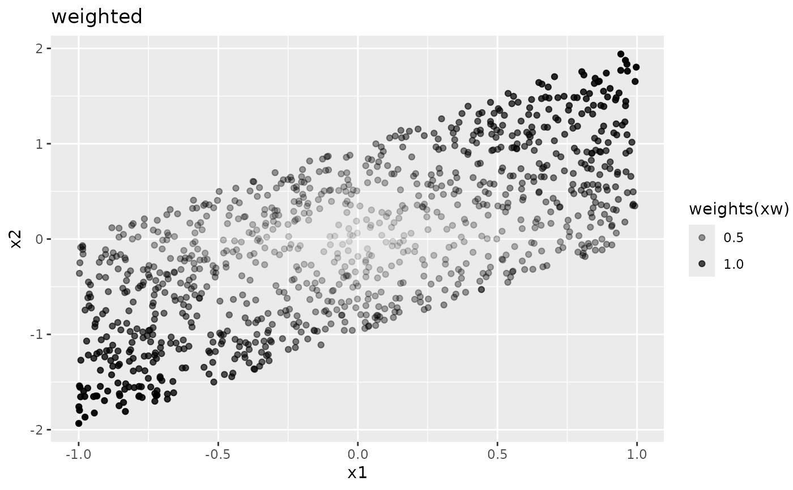
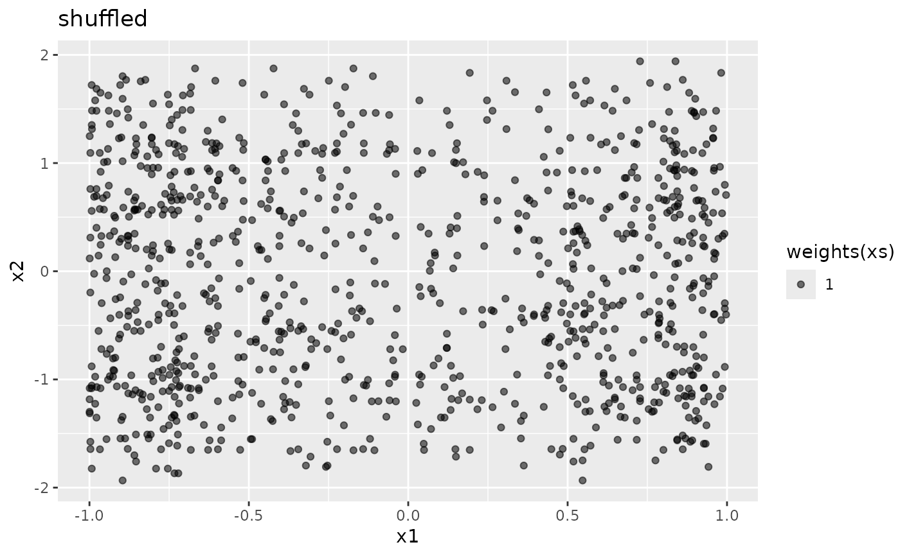
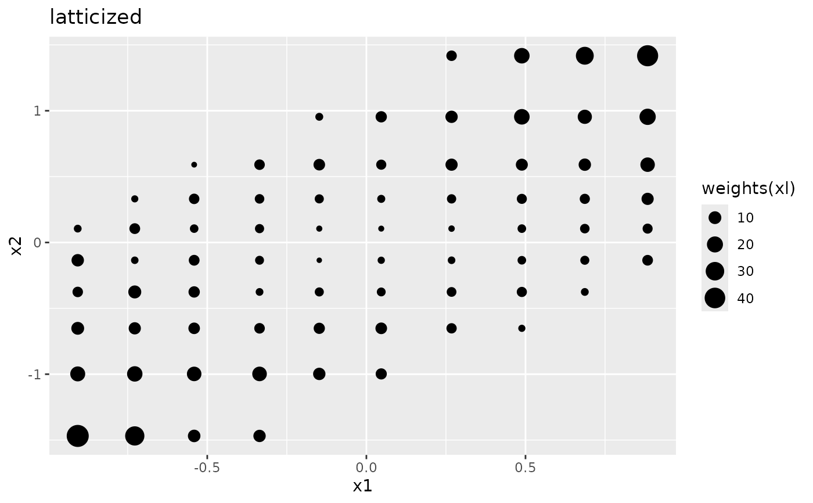

weighted() returns a data frame with sample weights.
Usage
weighted(data, weights = NULL)
augmented(data, weights = NULL, size = nrow(data), r = 0.01)
shuffled(data, weights = NULL, size = nrow(data))
latticized(
data,
weights = NULL,
k = 10L,
type = 0L,
use.catchall = TRUE,
catchall = "(others)",
frames = list(),
keep.mean = TRUE
)
# S3 method for class 'weighted'
weights(object, ...)Arguments
- data
a data frame.
- weights
a numeric vector of sample weights for each observation in
data.- size
integer. The number of random observations whose values are sampled from the marginal distribution of each variable.
- r
a numeric value specifying the ratio of the total weights for the random observations to the sum of sample weights. The weight for the random observations is calculated as
sum(attr(data, "weights")) * r / size.- k
integer. The maximum number of sample points for each variable. If not positive, all unique values are used as sample points.
- type
integer. The type of encoding of quantitative variables to be passed to
numeric.encoder().- use.catchall
logical. If
TRUE, less frequent levels of factor variables are dropped and replaced by the catchall level.- catchall
a character string to be used as the catchall level.
- frames
a named list of encoding frames ("numeric.frame" or "factor.frame" objects).
- keep.mean
logical. If
TRUE, the representative values of each group is the average of the corresponding group.- object
a data frame with the attribute "weights".
- ...
not used.
Value
weighted() returns a data frame with the attribute "weights".
augmented() returns a weighted data frame of the original data and the shuffled data with relatively small weights.
shuffled() returns a weighted data frame of the shuffled data.
latticized() returns a weighted data frame of latticized data, whose values are grouped and replaced by the representative value of the corresponding group.
Details
weighted() returns a data frame with the "weights" attribute that can be extracted using stats::weights().
augmented(), shuffled() and latticized() return a weighted data frame with some data modifications.
These functions are designed for use with interpret().
As the modified data frames do not preserve the original correlation structure of the variables, the response variable (y) should always be replaced by the model predictions (yhat).
Examples
set.seed(42)
x1 <- runif(1000L, -1, 1)
x2 <- x1 + runif(1000L, -1, 1)
weights <- (abs(x1) + abs(x2)) / 2
x <- data.frame(x1, x2)
xw <- weighted(x, weights)
ggplot2::ggplot(xw, ggplot2::aes(x1, x2, alpha = weights(xw))) +
ggplot2::geom_point() +
ggplot2::ggtitle("weighted")

xs <- shuffled(xw)
ggplot2::ggplot(xs, ggplot2::aes(x1, x2, alpha = weights(xs))) +
ggplot2::geom_point() +
ggplot2::ggtitle("shuffled")

xa <- augmented(xw)
ggplot2::ggplot(xa, ggplot2::aes(x1, x2, alpha = weights(xa))) +
ggplot2::geom_point() +
ggplot2::ggtitle("augmented")
xl <- latticized(xw)
ggplot2::ggplot(xl, ggplot2::aes(x1, x2, size = weights(xl))) +
ggplot2::geom_point() +
ggplot2::ggtitle("latticized")
